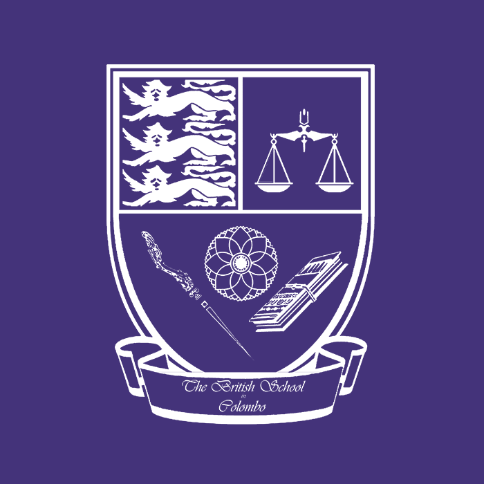
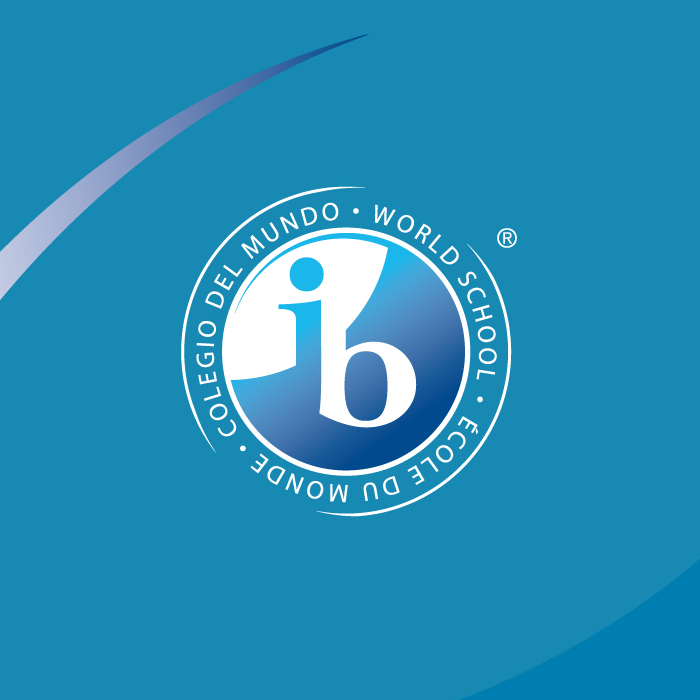
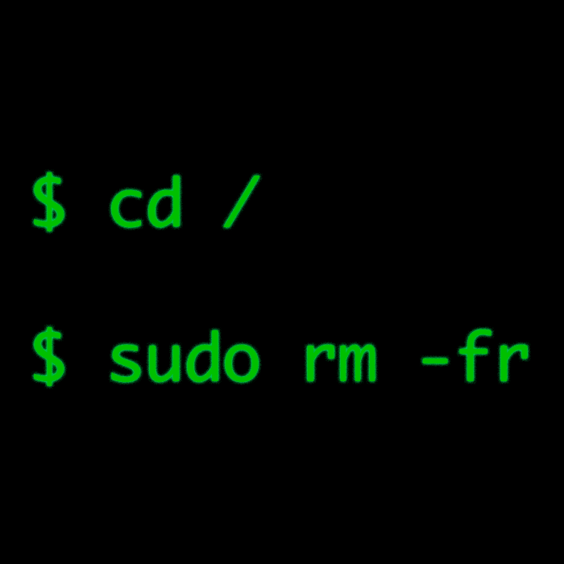
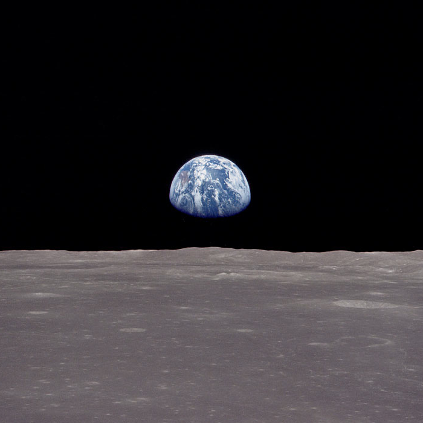

Home
About Me
Projects
Blog
Contact
Hello.
I am currently a freshman at the
University of Washington
in Seattle, WA.
I intend to major in
Computer Science
, and am currently completing coursework that will allow me to apply to the department by July 2014.
I graduated from
The British School in Colombo
in July 2013.
Prior to BSC, I attended 4 schools both in Sri Lanka and the United States which has given me a unique perspective of the world.

I received the
International Baccalaureate Diploma
when I graduated from high school.
I completed coursework in Higher Level Mathematics, Physics and Chemistry as well as in Standard Level English, Spanish and Geography.

I am very passionate about computers and computer technology in general.
From
a very early age
, I have demonstrated a keen interest in computers and have since fostered that interest into the skills I have today.

I am a motivated, inspired and driven individual, and I can't wait to make a dent in the Universe.
"Because the people who are crazy enough to think they can change the world, are the ones who do."
Ken Segall and Rob Siltanen,
TWBA\Chiat\Day
